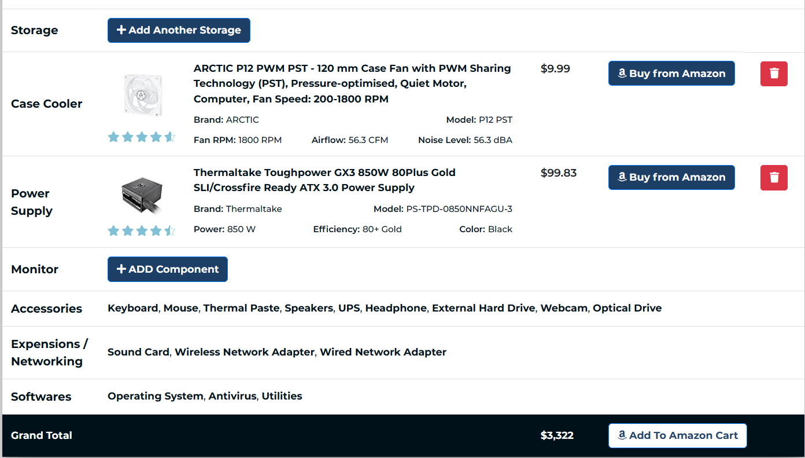

1. PCbuilding websites
Custom PC part picking websites are incredibly helpful for someone who is building their first PC and dont know what components they accually need. These part picking sites are setup so you can go down the line choosing your desired parts untill you have selected every part nessesary to build a functining PC all on one webpage.
Helpful features about these sites are:
- Totaling up the sum of all components. 
- Displaying the total power wattage your PC will consume.
- Making sure all chosen PC parts are compatible with each other.

Visit this recomended custom PC part Picker. offical PCbuilder website.